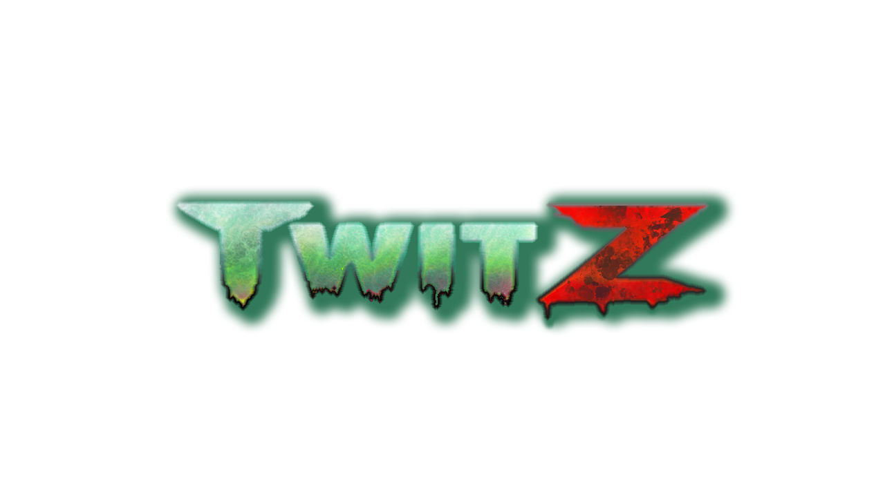
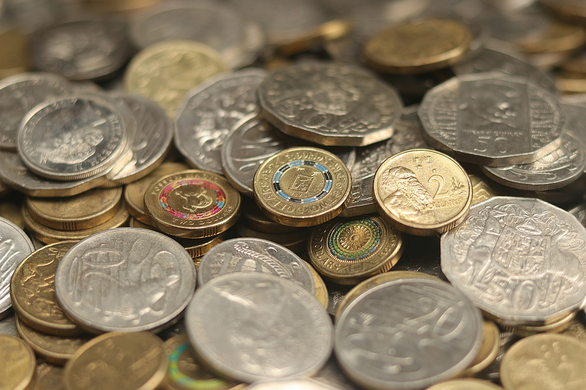
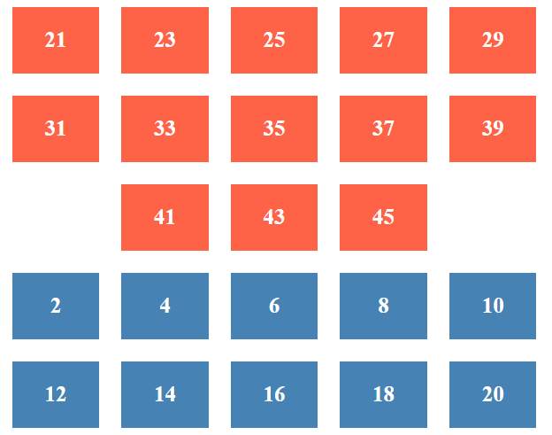

Twit Z - PC Game
TWIT Z is an innovative, interactive PC game designed specifically for Twitch streamers and their audiences. This zombie-themed game enhances viewer engagement by allowing Twitch viewers to actively participate in the gameplay through chat commands. As streamers broadcast the game, viewers can join the action by sending commands that influence the in-game events, creating a dynamic and collaborative gaming experience.

Australian Coins Website
This project is an online resource dedicated to the history and evolution of Australian currency. The website provides detailed information on both pre-decimal and decimal currency systems used in Australia, highlighting significant coins, their denominations, and the historical context surrounding their circulation.

Lotto Number Selector
This project is an interactive Lotto Number Selector website designed to simulate a lotto result marker. The website allows users to select and mark their chosen lotto numbers with ease, providing a visual and interactive way to track lottery results.
Photo by Nick Morrison on Unsplash